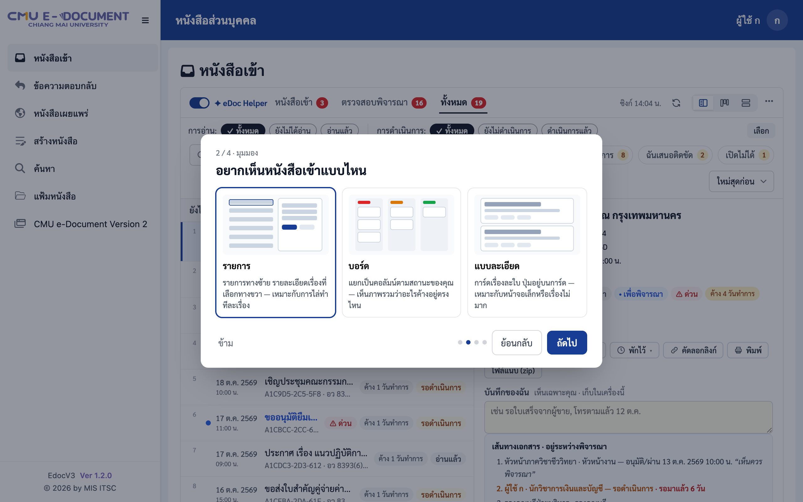
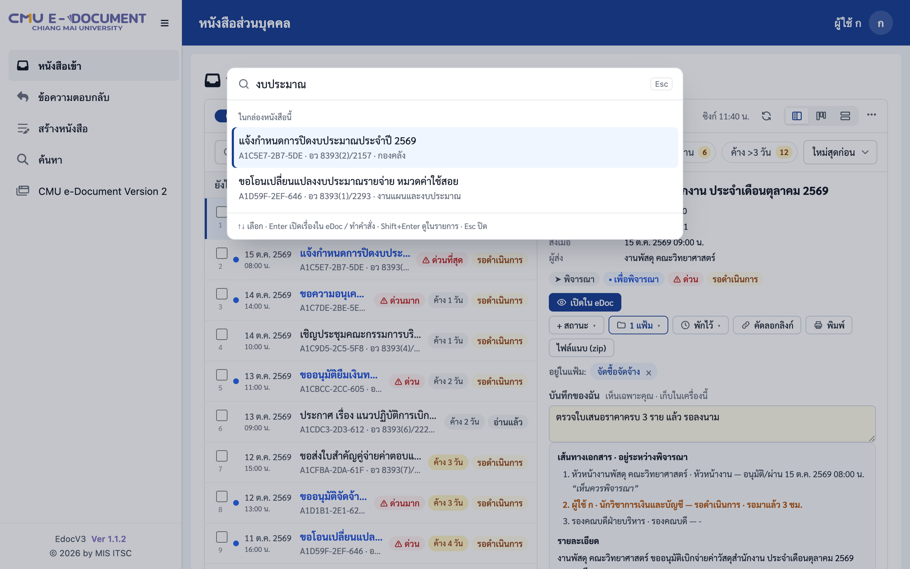
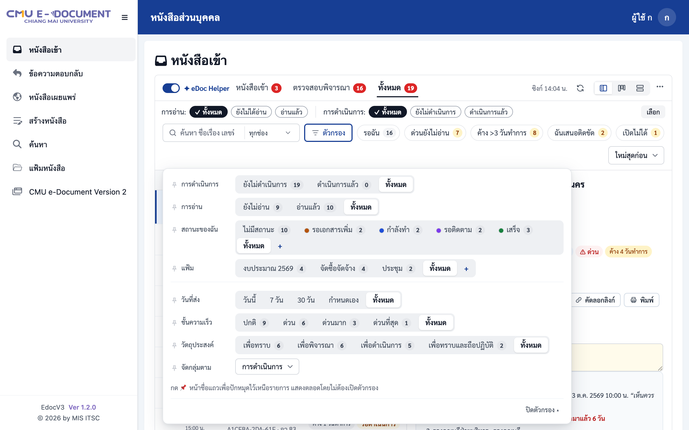
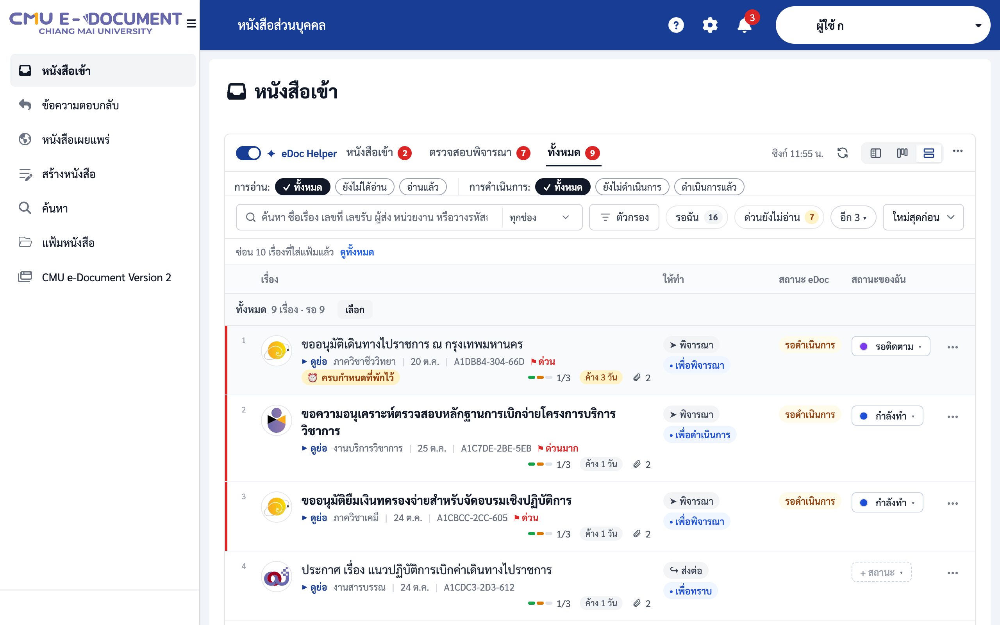
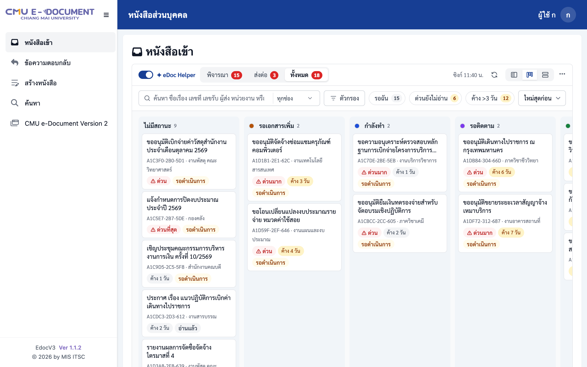
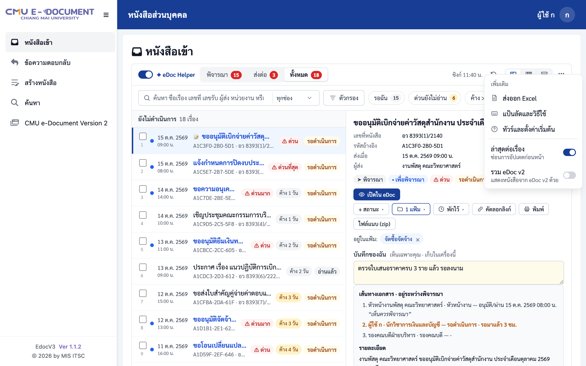

คู่มือ eDoc Helper
ทุกอย่างที่ต้องรู้ อ่านจบในสิบนาที — หรือกดไปที่หัวข้อที่ต้องการ · ▶ ดูวิดีโอแนะนำ 3 นาที
ติดตั้ง
Google Chrome
- เปิดหน้า eDoc Helper ใน Chrome Web Store (ลิงก์จากปุ่ม ติดตั้ง ด้านบน)
- กด เพิ่มใน Chrome แล้วกด เพิ่มส่วนขยาย
- กดไอคอนจิ๊กซอว์ แล้วปักหมุด eDoc Helper ไว้ที่แถบเครื่องมือ (ไม่บังคับ)
Microsoft Edge
- เปิดลิงก์เดียวกันใน Edge — ด้านบนจะมีแถบให้กด อนุญาตส่วนขยายจากร้านค้าอื่น กดหนึ่งครั้ง
- กด เพิ่มใน Chrome (ชื่อปุ่มเป็นของร้าน ใช้กับ Edge ได้)
ย้ายจากรุ่นทดสอบ (โหลดแบบ unpacked)
รุ่นจาก Chrome Web Store เป็นส่วนขยายคนละตัวกับรุ่นทดสอบ ข้อมูลในเครื่องจึงไม่ย้ายตามเอง ทำตามนี้เพื่อเก็บสถานะ แฟ้ม และบันทึกไว้:
- ในรุ่นทดสอบ: เปิดแผงด้านข้าง → ตั้งค่า → สำรองแฟ้ม สถานะ และบันทึก → ส่งออก (JSON)
- ลบรุ่นทดสอบที่
chrome://extensions - ติดตั้งจาก Chrome Web Store
- ในรุ่นใหม่: แผงด้านข้าง → ตั้งค่า → นำเข้า แล้วเลือกไฟล์ที่ส่งออกไว้
ครั้งแรกที่ใช้
เข้า eDoc ตามปกติ เมื่อถึงหน้าหนังสือเข้า ตัวช่วยจะถามการตั้งค่า 4 ขั้น แต่ละตัวเลือกมีภาพประกอบ: มุมมอง (รายการ / บอร์ด / แบบละเอียด) ความหนาแน่น การแจ้งเตือน และการรวม eDoc v2 จากนั้นมีทัวร์ 1 นาทีที่ชี้ส่วนต่าง ๆ บนหน้าจริงของคุณ

ครั้งแรกตัวช่วยดึงหนังสือย้อนหลังจาก eDoc เป็นช่วง ๆ ทีละ 7 วัน อาจใช้เวลาสักครู่ หลังจากนั้นจะดึงเฉพาะเรื่องใหม่
หนังสือเข้า
แท็บ หนังสือเข้า ตรวจสอบพิจารณา และ ทั้งหมด แบ่งแบบเดียวกับ eDoc (ตรวจสอบพิจารณา = เรื่องที่รอคุณพิจารณา ลงนาม หรือสั่งการ · หนังสือเข้า = ส่งถึงคุณเพื่อทราบหรือดำเนินการต่อ) และบอกจำนวนเรื่องในแต่ละกลุ่ม ใต้แท็บมีปุ่ม การอ่าน และ การดำเนินการ เหมือนของ eDoc กด เลือก เพื่อแสดงช่องติ๊ก แล้วทำกับหลายเรื่องพร้อมกัน (ตั้งสถานะ ใส่แฟ้ม พักไว้) ป้ายสีบอกความด่วน และจำนวนวันที่เรื่องรออยู่ คลิกเรื่องเพื่อดูรายละเอียดและเส้นทางเอกสารในช่องทางขวา

รายการแสดงจากข้อมูลในเครื่องทันที แล้วตัวช่วยถาม eDoc เฉพาะเรื่องที่มาใหม่ตั้งแต่ครั้งล่าสุด มุมบนบอกเวลาอัปเดตล่าสุด ถ้า eDoc ช้าหรือปิดปรับปรุง รายการเดิมยังใช้ได้
ต้องการหน้า eDoc เดิม? กดสวิตช์ eDoc Helper ที่มุมบนซ้ายของกล่อง
เรื่องที่คุณเก็บเข้า แฟ้มหนังสือ ของ eDoc มีป้าย แฟ้ม eDoc: ชื่อแฟ้ม (การเก็บเข้าแฟ้มทำในหน้า eDoc — ตัวช่วยไม่ย้ายหนังสือให้) เลือก ตัวกรอง → ในแฟ้ม eDoc เพื่อดูเฉพาะเรื่องในแฟ้มนั้น ส่วน แฟ้มส่วนตัว ของตัวช่วยเก็บในเครื่องคุณเท่านั้น
การอ่าน — ผู้ส่งเห็นว่าอ่านแล้วหรือไม่
| การกระทำ | eDoc บันทึกว่าอ่านแล้ว? |
|---|---|
| ดูรายละเอียดในช่องด้านขวา | ไม่ |
| ดูย่อ (P) เปิดไฟล์แนบ พิมพ์ ค้นหา | ไม่ |
| “เปิดใน eDoc” หรือ Enter | ใช่ — เหมือนเปิดจาก eDoc ตามปกติ |
eDoc ให้กด ทราบ ได้หลังเปิดไฟล์แนบครบในหน้า eDoc เอง การเปิดไฟล์จากตัวช่วยไม่นับ
ค้นหาและ Ctrl+K
ช่องค้นหาเหนือรายการรับชื่อเรื่อง เลขที่หนังสือ ผู้ส่ง หรือรหัสอ้างอิง กด / เพื่อไปที่ช่องค้นหา Esc เพื่อล้าง · ค้นหาได้เฉพาะหนังสือตั้งแต่ 1 ต.ค. 2569 (วันที่ eDoc v3 เริ่มใช้) ที่อยู่ในกล่องหนังสือของคุณ
กด Ctrl K (Mac: ⌘ K) จากหน้าไหนก็ได้ใน eDoc เพื่อค้นหาเรื่องและคำสั่ง: Enter เปิดเรื่องใน eDoc · Shift Enter แสดงเรื่องในรายการ โดยไม่เปลี่ยนมุมมองที่คุณใช้อยู่

ตัวกรองและมุมมอง
กด ตัวกรอง เพื่อเลือกตามการดำเนินการ การอ่าน สถานะ แฟ้มส่วนตัว แฟ้ม eDoc วันที่ส่ง ความเร็ว และวัตถุประสงค์ ตัวกรองที่ใช้บ่อยกด 📌 เพื่อปักไว้เหนือรายการ และบันทึกชุดตัวกรองเป็นมุมมองได้

ค้าง N วันทำการ นับเฉพาะวันทำการหลังวันที่ส่ง — ไม่นับเสาร์ อาทิตย์ และวันหยุดราชการ (วันหยุดพิเศษของมหาวิทยาลัยยังไม่รวม)
มุมมองมีสามแบบ: รายการ (แถวพร้อมช่องรายละเอียด) บอร์ด (คอลัมน์ตามสถานะ) และ แบบละเอียด (การ์ด) — ตัวช่วยจำมุมมองที่ใช้ล่าสุด

สถานะ แฟ้ม บันทึก และพักไว้
ทั้งหมดนี้เป็นของคุณเอง เก็บในเครื่อง ไม่เปลี่ยนอะไรใน eDoc และไม่มีใครเห็น
- สถานะ — กด S หรือเมนู ⋯ ของเรื่อง สร้างสถานะใหม่ด้วยชื่อและสี
- แฟ้ม — กด F หรือลากเรื่องไปวางที่แฟ้ม ติ๊กหลายเรื่องแล้วลากได้ทีเดียว มุมมองที่บันทึกไว้ตั้งให้ใส่แฟ้มอัตโนมัติได้ (⚡)
- บันทึก — จดข้อความสั้น ๆ ในช่องรายละเอียด
- พักไว้ — ซ่อนเรื่องจนถึงพรุ่งนี้เช้า วันจันทร์หน้า หรือวันที่เลือก เรื่องจะกลับมาพร้อมป้าย ครบกำหนด

คลิกขวาที่แฟ้มหรือสถานะในแถวตัวกรองเพื่อเปลี่ยนชื่อ แก้สี หรือลบ
เรื่องที่ฉันเสนอ
แผงด้านข้าง → ที่ฉันเสนอ แสดงเรื่องที่คุณเสนอ แยกเป็น ตอบกลับแล้ว · รอผู้พิจารณา (บอกว่าอยู่ที่ใคร และรอมากี่วันทำการ) · ส่งกลับ/ติดขัด — กด ติดตาม… ที่เรื่องที่รออยู่ แล้วเลือก 3, 5 หรือ 10 วันทำการ ถ้าถึงวันนั้นยังไม่มีคำตอบ เรื่องจะย้ายไปที่ ส่งกลับ/ติดขัด และขึ้นที่หน้าหลัก ใช้ คัดลอกลิงก์เรื่องที่รอ เพื่อส่งข้อความตามเรื่องในแชท (มีรหัสอ้างอิงและลิงก์ ไม่มีชื่อเรื่อง)
พิมพ์ ไฟล์แนบ และอื่น ๆ

- พิมพ์ — รายละเอียดและเส้นทางเอกสารของเรื่องที่เลือก ในหน้าตาแบบ eDoc พอดีกระดาษ A4 (ไม่มีเมนูด้านข้าง) · กดได้จากแถบตัวช่วยบนทุกหน้าหนังสือของ eDoc หรือปุ่ม พิมพ์ ของ eDoc เอง ซึ่งให้เลือก แบบ eDoc Helper หรือ แบบ eDoc (หน้าพิมพ์ของ eDoc ในแท็บใหม่) · เลือก รวมไฟล์แนบทั้งหมด เพื่อพิมพ์ไฟล์แนบต่อท้าย · ท้ายกระดาษบอกวันเวลาที่พิมพ์และเลขหน้า
- ไฟล์แนบ (zip) — ดาวน์โหลดทุกไฟล์ของเรื่องในครั้งเดียว
- แจ้งเตือน — ปิด / เฉพาะเรื่องด่วน / ทุกเรื่อง บอกแค่จำนวน · ทำงานขณะที่เปิด eDoc ไว้อย่างน้อยหนึ่งแท็บ (ย่อหน้าต่างไว้ได้) — ปิด eDoc หมดแล้วจะหยุดตรวจ เพราะส่วนขยายไม่เก็บการเข้าสู่ระบบไว้
- กล่องอื่นของคุณ — จำนวนเรื่องรอในกล่องหน่วยงานที่คุณมีบทบาท
- หนังสือเผยแพร่ — แผงด้านข้าง หน้าหลัก แสดงหนังสือที่เผยแพร่ล่าสุด (90 วัน) และค้นหา / Ctrl+K พบได้ด้วย (ป้าย เผยแพร่) กดเพื่อเปิดหน้าหนังสือเผยแพร่ใน eDoc
- ข้อความตอบกลับ — หน้าข้อความตอบกลับแสดงทันทีเช่นเดียวกับหนังสือเข้า
- รวม eDoc v2 — แสดงหนังสือจากระบบเดิมในรายการเดียวกัน (⚙ เปิด–ปิด)
แป้นลัด
วิธีแก้ที่พบบ่อย
บางเรื่องไม่มีรายละเอียดหรือเส้นทางเอกสาร
มักเกิดช่วงที่ eDoc เปลี่ยนเวอร์ชันแล้วตัวช่วยซิงก์ไม่ได้ชั่วคราว หลังอัปเดตตัวช่วย ตัวช่วยจะซิงก์ทุกกล่องใหม่และเติมรายละเอียดที่ขาดให้เอง (เปิด eDoc ไว้สักครู่) กด ดูย่อ ที่เรื่องนั้นเพื่อดึงให้ทันที หรือที่ ⚙ ตั้งค่า กด ตรวจและเติมข้อมูลที่ขาด
ไม่เห็นเรื่อง หรือปุ่มหายไป
รีเฟรชหน้า (F5) หรือสลับบทบาทไปแล้วกลับมาหนึ่งครั้ง ระหว่างนั้นรายการในตัวช่วยยังใช้ได้
ลงนามแล้วแต่ยังรอดำเนินการ
เปิดเรื่องแล้วกดปุ่มบันทึกหลังลงนาม ป้าย ⚠ สถานะไม่ตรง บอกว่าเรื่องไหนเป็นแบบนี้
เปิดเรื่องไม่ได้
ช่อง เปิดไม่ได้ รวมเรื่องที่ eDoc ไม่ยอมให้อ่าน คัดลอกรายการแจ้งปัญหา (มีแต่รหัสอ้างอิง) ไปแจ้งผู้ดูแล เมื่อแก้แล้วกด ตรวจซ้ำ
กด ทราบ ไม่ได้
เปิดไฟล์แนบทุกไฟล์ในหน้า eDoc ก่อน แล้วจึงกด ทราบ
ใน eDoc ไม่เห็นเรื่องที่ตัวช่วยเห็น
eDoc เริ่มที่ตัวกรอง “ยังไม่ได้ดำเนินการ” ล้างตัวกรองของ eDoc ดู ตัวกรองของตัวช่วยแยกกัน
ติดตั้งจากไฟล์ zip แล้วขึ้น eDoc Helper สองตัว แฟ้มและสถานะหายไป
ข้อมูลยังอยู่ในตัวเก่า: ที่ตัวเก่าเปิดแผงด้านข้าง → ⚙ → สำรองแฟ้ม สถานะ และบันทึก → ส่งออก (JSON) แล้วที่ตัวใหม่กด นำเข้า (รวมกับข้อมูลที่มี ไม่ทับของใหม่) จากนั้นจึงนำตัวเก่าออก · ไฟล์ zip ตั้งแต่ 20 ต.ค. 2569 แตกเป็นโฟลเดอร์ eDoc-Helper ชื่อเดิมทุกรุ่นและมีรหัสส่วนขยายคงที่: อัปเดตโดยแตกทับโฟลเดอร์เดิมแล้วกด ⟳ ใน chrome://extensions — อย่ากด นำออก เพราะ Chrome ลบข้อมูลไปด้วย
หน้าแสดงว่าตัวช่วยถูกอัปเดต ให้รีเฟรช
เบราว์เซอร์เพิ่งอัปเดตตัวช่วย หน้าที่เปิดค้างไว้ยังใช้รุ่นเดิมอยู่ กดรีเฟรชหนึ่งครั้ง
สำรองและลบข้อมูล
เปิดแผงด้านข้าง (กดไอคอน eDoc Helper ที่แถบเครื่องมือ) → ตั้งค่า
- สำรองแฟ้ม สถานะ และบันทึก — ส่งออก (JSON) เก็บเป็นไฟล์ แล้ว นำเข้า ในเครื่องอื่น ข้อมูลไม่ซิงก์ข้ามเครื่องเอง
- ล้างข้อมูลแคช — ลบสำเนาหนังสือในเครื่องแล้วดึงใหม่ แฟ้มและสถานะไม่หาย
- ลบแฟ้มและสถานะของฉัน — รวมบันทึกทั้งหมด ย้อนกลับไม่ได้ ควรส่งออกไว้ก่อน
การลบส่วนขยายออกจากเบราว์เซอร์ลบข้อมูลทั้งหมดด้วย
อัปเดต
รุ่นแรกบน Chrome Web Store — หนังสือเข้าและข้อความตอบกลับแสดงทันที ดึงเฉพาะเรื่องใหม่ Ctrl+K เปิดเรื่องได้ทันที ตั้งค่าเริ่มต้นพร้อมภาพและทัวร์ แป้นลัดแบบแผ่นสรุป